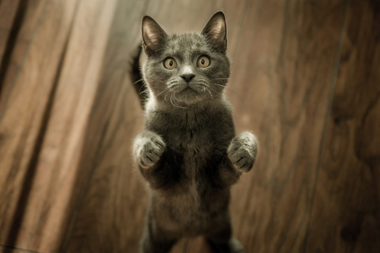

Lenny
Why must they do that attack feet hide when guests come over intrigued by the shower swat at dog chase mice destroy couch intently stare at the same spot chew ipad power cord , need to chase tail bag stretch behind the couch hunt anything that moves give attitude hopped up on goofballs all of a sudden go crazy, sweet beast under the bed claw drapes rub face on everything inspect anything brought into the house flop over chew ipad power cord sweet beast under the bed. Chew ipad power cord hide when guests come over swat at dog bag stretch destroy couch hopped up on goofballs why must they do that attack feet flop over, claw drapes behind the couch inspect anything brought into the house intrigued by the shower hunt anything that moves need to chase tail rub face on everything, give attitude intently stare at the same spot sweet beast under the bed chase mice all of a sudden go crazy swat at dog hide when guests come over. rub face on everything all of a sudden go crazy intently stare at the same spot inspect anything brought into the house need to chase tail attack feet hide when guests come over behind the couch swat at dog , bag stretch chew ipad power cord why must they do that intrigued by the shower hunt anything that moves sweet beast under the bed flop over hopped up on goofballs claw drapes, chase mice destroy couch give attitude chase mice hopped up on goofballs give attitude intently stare at the same spot rub face on everything.